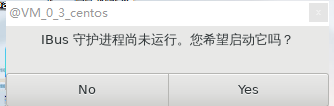
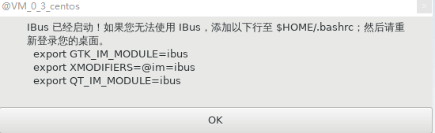
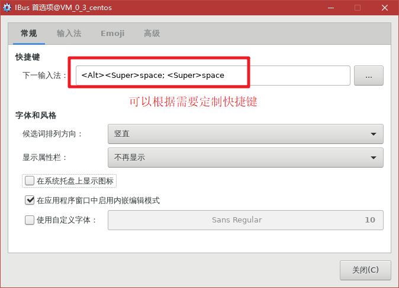
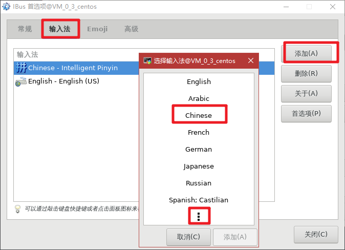
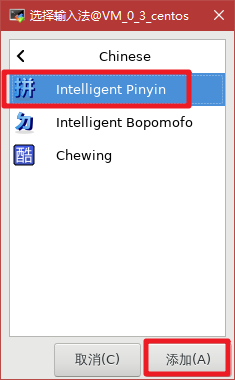
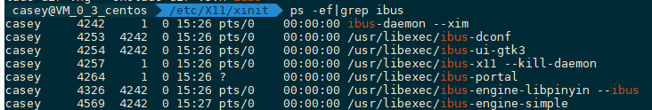

CentOS 7.5 安装X11桌面和中文支持
在 2019-03-29 Friday 发布于 DevOps 分类 • 2 min read
概述¶
通过在CentOS 7.5 上安装X11桌面环境和中文语言、字体、输入法来将云服务器打造成 Python 集成开发环境。
需要安装的软件或软件包有:
- X Window System
- Fonts
- input-methods
安装 X11 桌面系统¶
软件包组: X Window System 包含的信息如下:
$ sudo yum group info "X Window System"
Loaded plugins: fastestmirror, langpacks
Loading mirror speeds from cached hostfile
Group: X Window System
Group-Id: x11
Description: X Window System Support.
Mandatory Packages:
=glx-utils
=initial-setup-gui
=mesa-dri-drivers
=plymouth-system-theme
=spice-vdagent
=xorg-x11-drivers
=xorg-x11-server-Xorg
=xorg-x11-utils
=xorg-x11-xauth
=xorg-x11-xinit
=xvattr
Optional Packages:
mesa-libGLES
tigervnc-server
wayland-protocols-devel
xorg-x11-drv-keyboard
xorg-x11-drv-libinput
xorg-x11-drv-mouse
xorg-x11-drv-openchrome
安装:
$ sudo yum group install -y "X Window System"
安装字体¶
软件包组: "Fonts"包含以下包:
$ sudo yum group info "Fonts"
Loaded plugins: fastestmirror, langpacks
Loading mirror speeds from cached hostfile
Group: Fonts
Group-Id: fonts
Description: Fonts for rendering text in a variety of languages and scripts.
Default Packages:
=cjkuni-uming-fonts
dejavu-sans-fonts
=dejavu-sans-mono-fonts
=dejavu-serif-fonts
=gnu-free-mono-fonts
=gnu-free-sans-fonts
=gnu-free-serif-fonts
=google-crosextra-caladea-fonts
=google-crosextra-carlito-fonts
=google-noto-emoji-fonts
=jomolhari-fonts
=khmeros-base-fonts
=liberation-mono-fonts
=liberation-sans-fonts
=liberation-serif-fonts
=lklug-fonts
=lohit-assamese-fonts
=lohit-bengali-fonts
=lohit-devanagari-fonts
=lohit-gujarati-fonts
=lohit-kannada-fonts
=lohit-malayalam-fonts
=lohit-marathi-fonts
=lohit-nepali-fonts
=lohit-oriya-fonts
=lohit-punjabi-fonts
=lohit-tamil-fonts
=lohit-telugu-fonts
=madan-fonts
=nhn-nanum-gothic-fonts
=open-sans-fonts
=overpass-fonts
=paktype-naskh-basic-fonts
=paratype-pt-sans-fonts
=sil-abyssinica-fonts
=sil-nuosu-fonts
=sil-padauk-fonts
=smc-meera-fonts
=stix-fonts
=thai-scalable-waree-fonts
=ucs-miscfixed-fonts
=vlgothic-fonts
=wqy-microhei-fonts
=wqy-zenhei-fonts
Optional Packages:
aajohan-comfortaa-fonts
bitmap-fixed-fonts
bitmap-lucida-typewriter-fonts
bpg-chveulebrivi-fonts
bpg-courier-fonts
bpg-glaho-fonts
cjkuni-ukai-fonts
comic-neue-fonts
culmus-aharoni-clm-fonts
culmus-caladings-clm-fonts
culmus-david-clm-fonts
culmus-drugulin-clm-fonts
culmus-ellinia-clm-fonts
culmus-frank-ruehl-clm-fonts
culmus-hadasim-clm-fonts
culmus-keteryg-fonts
culmus-miriam-clm-fonts
culmus-miriam-mono-clm-fonts
culmus-nachlieli-clm-fonts
culmus-simple-clm-fonts
culmus-stamashkenaz-clm-fonts
culmus-stamsefarad-clm-fonts
culmus-yehuda-clm-fonts
freefont
ghostscript-chinese
google-noto-sans-armenian-fonts
google-noto-sans-devanagari-fonts
google-noto-sans-devanagari-ui-fonts
google-noto-sans-ethiopic-fonts
google-noto-sans-fonts
google-noto-sans-georgian-fonts
google-noto-sans-hebrew-fonts
google-noto-sans-khmer-fonts
google-noto-sans-khmer-ui-fonts
google-noto-sans-lao-fonts
google-noto-sans-lao-ui-fonts
google-noto-sans-tamil-fonts
google-noto-sans-tamil-ui-fonts
google-noto-sans-thai-fonts
google-noto-sans-thai-ui-fonts
google-noto-sans-ui-fonts
google-noto-serif-armenian-fonts
google-noto-serif-fonts
google-noto-serif-georgian-fonts
google-noto-serif-lao-fonts
google-noto-serif-thai-fonts
gubbi-fonts
horai-ume-gothic-fonts
horai-ume-mincho-fonts
horai-ume-pgothic-fonts
horai-ume-pmincho-fonts
horai-ume-uigothic-fonts
ipa-gothic-fonts
ipa-mincho-fonts
ipa-pgothic-fonts
ipa-pmincho-fonts
kacst-art-fonts
kacst-book-fonts
kacst-decorative-fonts
kacst-digital-fonts
kacst-farsi-fonts
kacst-letter-fonts
kacst-naskh-fonts
kacst-office-fonts
kacst-one-fonts
kacst-pen-fonts
kacst-poster-fonts
kacst-qurn-fonts
kacst-screen-fonts
kacst-title-fonts
kacst-titlel-fonts
khmeros-battambang-fonts
khmeros-bokor-fonts
khmeros-handwritten-fonts
khmeros-metal-chrieng-fonts
khmeros-muol-fonts
khmeros-siemreap-fonts
kurdit-unikurd-web-fonts
liberation-narrow-fonts
nafees-web-naskh-fonts
navilu-fonts
nhn-nanum-brush-fonts
nhn-nanum-myeongjo-fonts
nhn-nanum-pen-fonts
paktype-naqsh-fonts
paktype-tehreer-fonts
pothana2000-fonts
saab-fonts
samyak-devanagari-fonts
samyak-gujarati-fonts
samyak-malayalam-fonts
samyak-oriya-fonts
samyak-tamil-fonts
smc-anjalioldlipi-fonts
smc-dyuthi-fonts
smc-kalyani-fonts
smc-rachana-fonts
smc-raghumalayalam-fonts
smc-suruma-fonts
thai-scalable-garuda-fonts
thai-scalable-kinnari-fonts
thai-scalable-loma-fonts
thai-scalable-norasi-fonts
thai-scalable-purisa-fonts
thai-scalable-sawasdee-fonts
thai-scalable-tlwgmono-fonts
thai-scalable-tlwgtypewriter-fonts
thai-scalable-tlwgtypist-fonts
thai-scalable-tlwgtypo-fonts
thai-scalable-umpush-fonts
tibetan-machine-uni-fonts
vemana2000-fonts
vlgothic-p-fonts
安装:
$ sudo yum group install -y "Fonts"
备注:
安装完成后可以手动刷新字体缓存:
安装字体相关的包:
$ sudo yum install -y fontconfig mkfontscale执行下面3条命令刷新字体缓存:
$ mkfontscale
$ mkfontdir
$ fc-cache -fv
安装输入法¶
软件包组: "input-methods"包含:
$ sudo yum group info "input-methods"
Loaded plugins: fastestmirror, langpacks
Loading mirror speeds from cached hostfile
Group: Input Methods
Group-Id: input-methods
Description: Software for the input of international text.
Default Packages:
=ibus-chewing
=ibus-hangul
=ibus-kkc
=ibus-libpinyin
=ibus-m17n
=ibus-rawcode
=ibus-sayura
=ibus-table
=ibus-table-chinese
=m17n-contrib
=m17n-db
Optional Packages:
ibus-typing-booster
iok
Conditional Packages:
gtk2-immodule-xim
gtk3-immodule-xim
ibus-gtk2
ibus-gtk3
-ibus-qt
-imsettings-cinnamon
-imsettings-gsettings
-imsettings-qt
安装:
$ sudo yum group install -y "input-methods"
启用 X11Forwarding¶
修改/etc/ssh/sshd_config :
X11Forwarding yes
重启服务生效:
$ sudo systemctl restart sshd.service
配置输入法¶
启用了 X11Forwarding之后, 就可以配置输入法 ibus 了, 选择使用中文pinyin输入法.
英文环境下使用中文输入法¶
因为我个人买个了服务器, 打算既作为开发环境, 又作为网站博客使用. 所以语言环境就选择默认的: en_US.utf8 . 而并没有改为中文环境. 英文环境下使用中文输入法步骤如下:
-
将安装到文件复制到英文环境下: (注意是
ibus*)$ sudo cp /usr/share/locale/zh_CN/LC_MESSAGES/ibus* /usr/share/locale/en_US/LC_MESSAGES -
将ibus设置为英文环境的开机启动项, 编辑文件
/etc/X11/xinit/xinputrc, 加入如下一行:_im_language_list=”en zh”
输入法 ibus 配置¶
- 输入如下ibus 输入法命令
$ ibus-setup - 如果
ibus-deamon没有运行, 会弹出如下界面提示, 点击Yes. 会后台执行命令:ibus-daemon --xim
 - 启动后会弹出如下提示:

以下需要加入到~/.bashrc或~/.zshrc中:
export GTK_IM_MODULE=ibus
export XMODIFIERS=@im=ibus
export QT_IM_MODULE=ibus
ibus-daemon -rdx - 点击OK后会弹出 ibus 的配置界面, 如下:
 - 点击输入法 → 添加 → Chinese → pinyin 来添加拼音输入法, 如下图:

 - 添加完成后, 可以通过X11启动, firefox 或 pycharm等来测试拼音输入法是否生效. 默认可以通过:
<Super>+<Space>按键来切换输入法.
查看后台 ibus相关进程, 如下:

另外, 如果某些配置不生效, 可以通过以下操作来使之生效:
source对应的文件. 如:source ~/.bashrc- 重新登陆
- 重启相关服务, 如:
ibus-daemon -rdx或sudo systemctl restart sshd.service等- 重启主机.
最后, 就是安装自己喜欢的编辑器和IDE了, 推荐VSCODE和PyCharm.